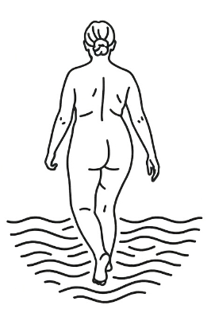

La fitxa
Què hi trobarà s
Cala Borro reforça el bloc del Cap Ras dins del projecte. És una fitxa orientativa, llesta per afegir-hi accés exacte i informació estacional.

Alt Emporda
Raco de Cap Ras entre Llanca i Colera amb perfil natural i una atmosfera molt Costa Brava.
La fitxa
Cala Borro reforça el bloc del Cap Ras dins del projecte. És una fitxa orientativa, llesta per afegir-hi accés exacte i informació estacional.